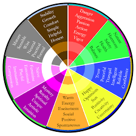

Color symbolism is the subjective meaning humans attach to various colors.
People respond to color in three ways—biologically, culturally, and personally from experience.
Color plays an important role in setting expectations for a product and communicating its key characteristics.
Blue is a primary color across all models of color space. It is the color of the ocean and the sky; it often symbolizes serenity, stability, inspiration, or wisdom. It can be a calming color, and symbolize reliability
Green is a primary color in many models of color space, and a secondary in all others. It is most often used to represent nature, healing, health, youth, or fertility, since it is such a dominant color in nature.
